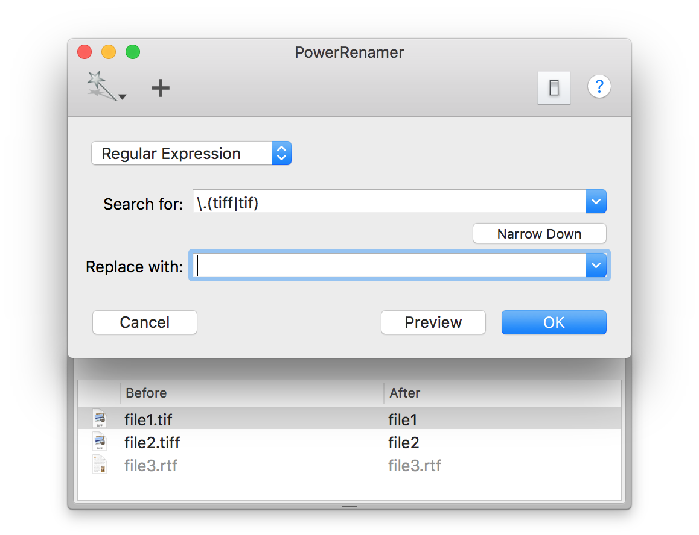

You can confirm how each filenames are changed before rename files actually.
Pressing "Preview" button (or shift + return key) cause to open a drawer which lists original filenames and new filenames.
At this time files are not renamed yet. Pressing "OK" button will start actual renaming.
